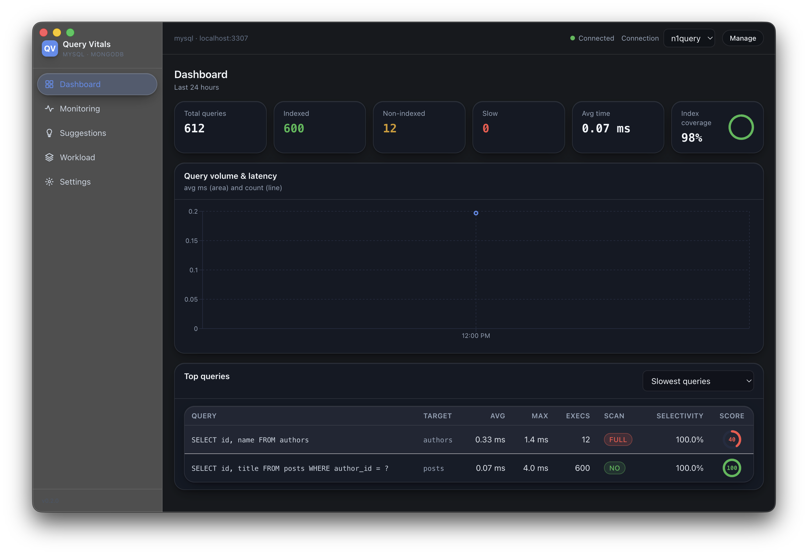
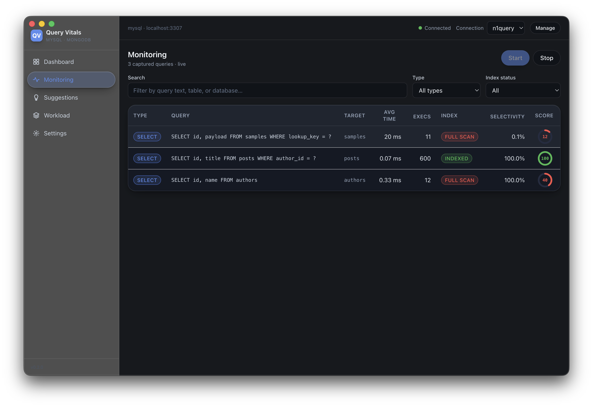
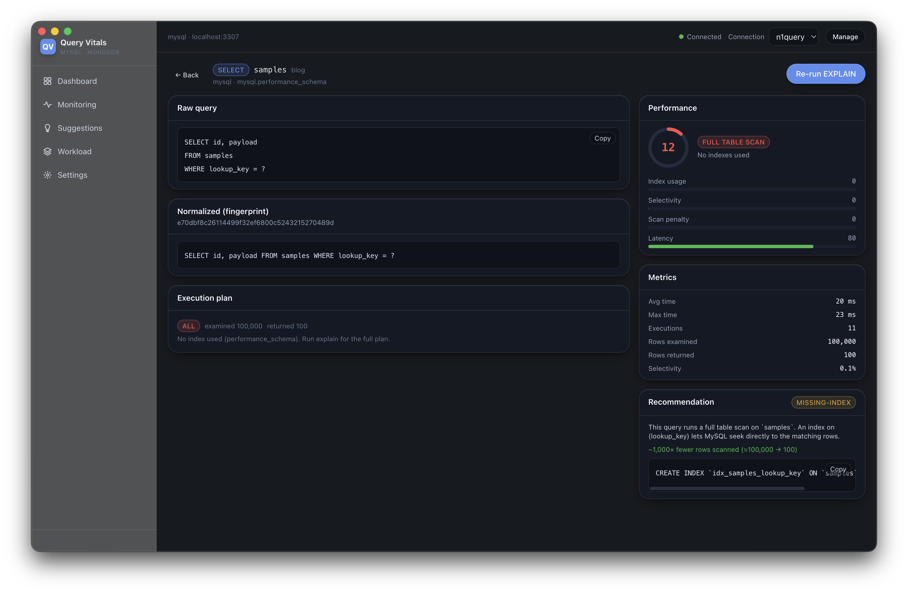
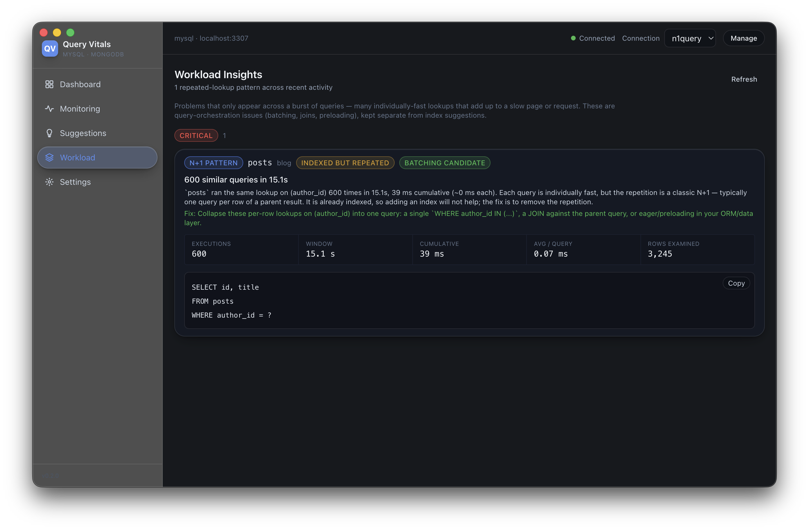

Find the queries that are quietly killing your database
Query Vitals connects to your database, watches the queries running against it, and turns engine-native execution plans into a plain diagnosis — missing indexes, full scans, and N+1 workload patterns — each scored 0–100 with a copy-ready fix.

From vague slowness to a precise fix
Slow queries hide behind high CPU, long page loads, and "it just feels slower today." Query Vitals replaces guesswork with engine-native telemetry and a normalized diagnosis.
Continuous monitoring
Observes live query activity through each engine's own telemetry — performance_schema for MySQL, the profiler for MongoDB — with a real-time monitoring table.
Normalized execution plans
Runs each query through the engine's native EXPLAIN / explain() tooling and renders the plan tree, rows examined vs. returned, and the index used.
A single 0–100 score
One shared performance score across both engines, so a slow MongoDB lookup and a MySQL full scan speak the same language and rank side by side.
Copy-ready index fixes
Rule-based recommendations for missing, composite, compound, redundant, and unused indexes — with estimated impact and dismissal, ready to paste.
N+1 & workload patterns
Deterministic detection of repeated point-lookups that are individually fast but costly in aggregate — "84 similar queries in 2.3s" — scored by cumulative cost.
Dashboard & rankings
Metric cards, slowest / most-executed / full-scan / poor-selectivity rankings, and Recharts time series of latency and volume over your observation window.
See it working on a real database
Every screen is built for dense, fast inspection — the same dark, developer-tool feel as the apps you already keep open.
Watch queries as they run
A real-time table of captured queries with type, target, average time, execution count, index status, and selectivity — each scored 0–100, so the full scans jump out instantly. Search and filter by type or index status.


From plan to a copy-ready fix
Drill into any query for the raw text, its normalized fingerprint, the full execution plan, and a performance breakdown — rows examined vs. returned, latency, scan penalty. When an index would help, the exact CREATE INDEX is generated with estimated impact, ready to copy.
Catch the N+1 a single query hides
Some problems only appear across a burst of queries. Query Vitals flags repeated point-lookups — "600 similar queries in 15.1s" — scored by cumulative cost and tagged INDEXED BUT REPEATED or BATCHING CANDIDATE, with a concrete fix to collapse them into one.

Observe → analyze → score → suggest
The same four-step pipeline runs continuously for every query, on either engine.
Add a connection
Point Query Vitals at MySQL 8+ or MongoDB 5+. Capability checks confirm monitoring access; passwords go to your OS keychain.
Collect queries
A poll loop streams real query activity from engine-native telemetry into a local history, fingerprinting and merging as it goes.
Score the plan
Each query's execution plan is normalized and scored 0–100, flagging full scans, poor selectivity, and repeated-lookup bursts.
Get the change
Receive a copy-ready index or batching suggestion with estimated impact — or a workload insight when the real issue is orchestration.
Local-first by design
Your query history, recommendations, and settings stay on your machine. There's nothing to sign up for and no server in the loop — Query Vitals talks only to the database you point it at.
- ✓ No account required. Install and connect — that's it.
- ✓ No cloud service. All analysis runs on your device.
- ✓ Data stays local. History & settings live in local SQLite.
- ✓ Keychain-backed secrets. DB passwords go to the OS keychain, never plaintext.
- ✓ AI stays optional. Future AI features are opt-in and disabled by default.
A native desktop app, no native build
Diagnose your database in minutes
Download the desktop app for your platform, or clone the repo and run it from source. Free, open source, and entirely local.